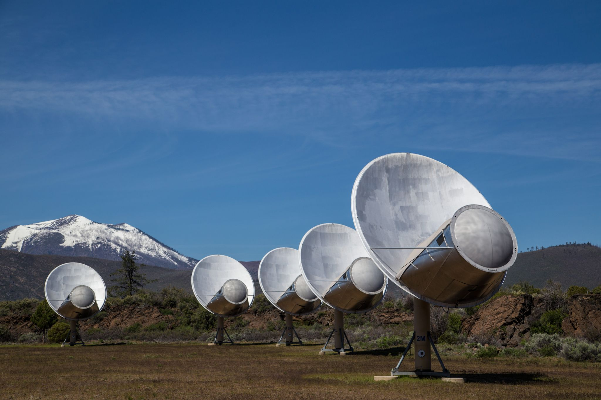
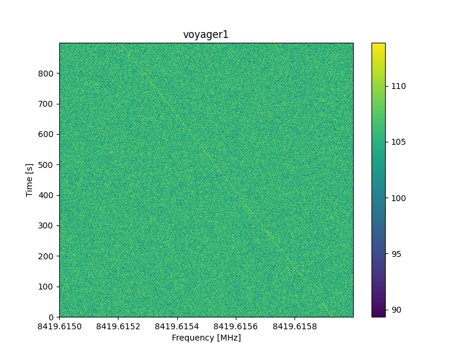

Voyager 1
Detecting Voyager 1 with the ATA
Almost 45 years after its launch, Voyager 1 is the farthest human-made object from our home planet. Located 156 AU, or 23.3 billion km, (at the time of writing) away in the direction of the constellation Ophiuchus, Voyager 1, along with its twin Voyager 2, is set on a mission to explore the boundaries of the heliosphere and the interstellar medium. Communications with the space probe is still underway using large dishes of the Deep Space Network, and commands/data are sent back and forth between earth and Voyager 1, most of the time at a rate of 160 bits per second.
This write-up describes the observation and detection of the Voyager 1 carrier signal using the Allen Telescope Array.
The refurbishment of the Allen Telescope Array
The Allen Telescope Array is an interferometer hosted at the Hat Creek Radio Observatory, some 5-hour drive north of San Francisco. The telescope comprises 42 fully-steerable 6.1m-diameter telescopes, of which ~20 are fitted with wideband cryogenically cooled feeds. The feeds sense electromagnetic waves within the frequency range of 1 to 12 GHz. A refurbishment program has been underway since early 2019 aimed at upgrading the feeds along with the digital signal processing hardware and software. As part of the ongoing refurbishment, a new digital correlator and beamformer based on commodity CPUs and GPUs is being developed and installed.
 The Allen Telescope Array (Credit: Joe Marfia)
A beamformer, in the recieving paradigm, is the process of coherently summing multiple receptors in order to maximize their sensitivity towards a particular spatial direction. Beamforming is a very rich topic and I won’t go into details here, but in short, a beamformer requires a calibration scheme to compute the instrumental delays and phases for each station of an array. For the ATA beamformer system, we utilize a correlator – a software suit that multiplies signals from each pair of antennas together – to derive the needed delay and phase solutions.
Observations
On July 9th, 2022, the 20 available antennas of the Allen Telescope Array were used to observe the Voyager 1 space probe. The coherent downlink frequency of Voyager 1, in the X-band, is ~8420.43 MHz, with a spectral width of <1 Hz. The ATA was tuned at a center frequency of 8400 MHz (the beamformer’s bandwidth, for each tuning, is relatively large, 672 MHz). Even though the DSN station at Golstone was receiving the downlink at the the time of the ATA observation, I assume no two-way communication mode has been set, and the transponder was not locked to the uplink frequency; telecommands are rarely issued to the spacecraft nowadays. Ten minutes of data on a nearby quasar1 were collected using the correlator, and a delay/phase solution was derived for the beamformer. The antennas were then pointed at the position of Voyager 1 as determined using the ephemeris obtained from the solar system dynamics NASA/JPL webpage (ICRF RA = 17:13:41.13, Dec = +12:23:49.9). Fifteen minutes of beamformed complex baseband data were then recorded and stored on disk.
Data Analysis
A large, ~500,000 point FFT was applied to the recorded data to bring the spectral resolution to a value close to that of the spectral width of the carrier frequency. Due to the fact that a changing velocity offset exists between earth and Voyager 1, the received carrier frequency will inevitably be Doppler shifted and drifting in time. The Doppler shift was then calculated (thanks Danni Estévez), and a waterfall plot of one of polarization was displayed. The figure below shows the dynamic spectrum of the Voyager 1 downlink signal.
 A waterfall (frequency vs time) plot displaying the Voyager 1 spacecraft as seen by the Allen Telescope Array. The color scale represents the flux density in units of dB. The narrowband signal is clearly seen drifting in frequency, as expected of a transmitter accelerating with respect to a receiver.
The data were corrected for the Doppler effect at a drift rate of ~-0.84Hz/s, and a carrier-to-noise of 11.5 dB was measured in a single polarization of the recorded 900 second segment.
Link budget calculation
Voyager 1 is equipped with a Pt = 22.4 W transmitter and it utilizes a Gt = 48 dBi high gain directional antenna pointed straight at earth (to read more about Voyager’s specification, see this). The spacecraft, at the time of observation, is at a distance of r = 23.3e9 km from earth.
Power density:
\[P_D = \frac{P_t \times G_t}{4\times\pi\times R^2} = \frac{22.4\times10^{4.8}}{4\times\pi\times (23.3\times10^{12})^{^2}} = 2.07 \times 10^{-22}\,\textrm{W.m}^{-2}\]Next, we’ll calculate the received power by the ATA beamformer. We use N_ant = 20 antennas in our observation, each antenna is ~6m in diameter with an aperture efficiency of ~0.6 in the X-band:
Collecting area:
\[A = N_{ant} \times \pi \times r^2 \times \epsilon_A = 339.3\,\textrm{m}^2\]Power received:
\[P = P_D \times A = 7.03 \times 10^{-20}\,\textrm{W} = -161.53\,\textrm{dBm}\]Next, we’ll calculate the ATA thermal noise:
\[N_0 = k_B \times T_{rec} \times BW = 1.38\times 10^{-23} \times 120 \times 1 = 1.66\times 10^{-21}\,\textrm{W} = -177.81\,\textrm{dBm}\]The above assumes a receiver temperature of 120 Kelvin at 8.4 GHz. The receiver temperature could have also been measured using the quasar observation, but the 120 Kelvin figure is not far from reality given previous measurements.
Finally, the expected carrier-to-noise ratio is:
\[C/N_0 = P - N_0 = 16.3\,\textrm{dB}\]Conclusion
The measured carrier-to-noise ratio in the 900s segment of our ATA data is ~5dB less than what is expected. We suspect his is due to many factors. Firstly, the Voyager 1 downlink polarization produced at X-band is 100% circular, whereas the ATA feeds are linearly polarized. Receiving circular polarization on linear feeds would entail a 3dB reduction in C/N0. Although synthesizing circular polarization using the ATA feeds is possible, it is beyond the scope of this work. Moreover, the Voyager 1 signal was only incoherently de-Dopplered. In other words, the effect of Doppler shifting within each of FFT channels was not corrected for. This will introduce some reduction in C/N0. Finally, the beamformer was assumed to have perfect efficiency, which is not the case in real-world scenarios.
The detection of Voyager 1, the farthest human-made object, with the refurbished Allen Telescope Array is an excellent display of the telescope’s capabilities and strengths, and a representation of the outstanding hard work put by the ATA team since the start of the refurbishment program in 2019
-
An accreting supermassive blackhole that emits continuum light over a very broad range of radio frequencies. Due to this property, quasars are often used as delay, phase, and flux calibrators for radio interferometers. ↩
BLOG
ATA SpaceCom Radio_astronomy